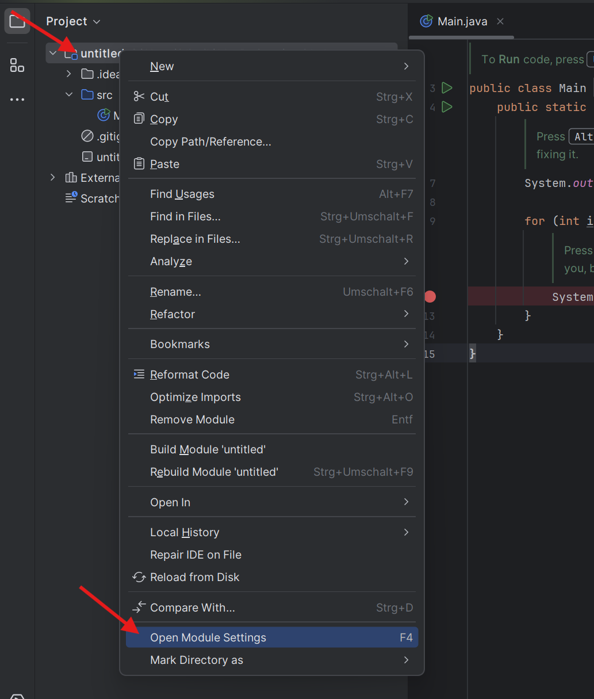
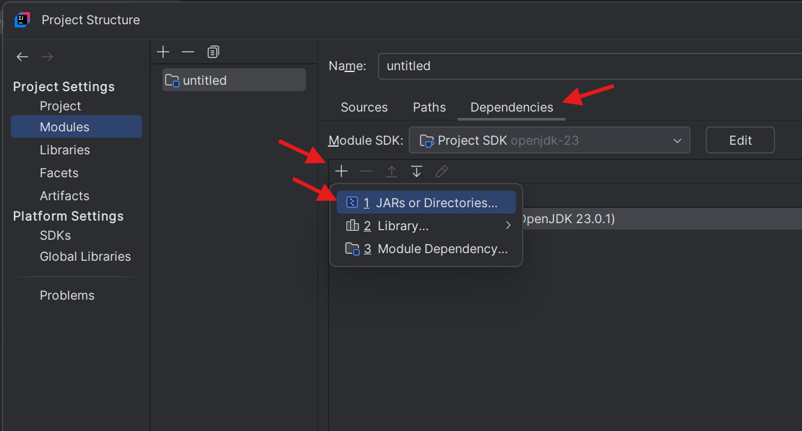

Einführung – Der Übergang von Processing zu Java
Im ersten Semester hast du bereits mit Processing gearbeitet und grundlegende Programmierkonzepte kennengelernt. Processing basiert auf Java, ist jedoch speziell darauf ausgelegt, kreative und grafische Anwendungen einfach umzusetzen. In diesem Kapitel lernst du, wie du von Processing zu „reinem“ Java übergehst und die Grundlagen der Java-Programmierung meisterst. Außerdem betrachten wir, wie du Processing "in" Java - also einer Java-Entwicklungsumgebung - verwenden kannst und worauf du dabei achten musst.
Java ist eine der weltweit am häufigsten verwendeten Programmiersprachen. Sie wird in Bereichen wie Webentwicklung, Mobile Apps, Unternehmenssoftware und sogar in eingebetteten Systemen eingesetzt. Der Übergang von Processing zu Java ermöglicht dir nicht nur, komplexere Anwendungen zu entwickeln, sondern auch, deine Programmierkenntnisse auf ein professionelles Niveau zu heben.
In diesem Abschnitt wirst du lernen:
- Wie du eine Java-Entwicklungsumgebung auf deinem Rechner einrichtest
- Wie du ein erstes, einfaches "Hello World!"-Programm in Java schreibst
- Wie Programme in Java grundlegend aufgebaut sind
- Wie du Processing in der Java-Entwicklungsumgebung nutzen kannst
Erste Schritte in Java
Einrichtung der Java-Entwicklungsumgebung
Um mit Java zu arbeiten, benötigst du eine sogenannte Entwicklungsumgebung. Eine Entwicklungsumgebung ist die Integration von verschiedenen Entwicklungswerkzeugen in ein Hauptprogramm zur effizienten und effektiven Softwareentwicklung. Sie wird oft mit dem englischen Begriff IDE (Integrated Development Environment) abgekürzt.
Jede Programmiersprache braucht verschiedene Komponente an Entwicklungswerkzeugen, um entwickelt werden zu können. Deswegen redet man auch von einer Entwicklungsumgebung für Java oder für C++ usw. Diese IDEs haben alle verschiedene Bestandteile.
Der Vorteil von so einer IDE ist, dass du "nur" ein Programm installieren musst und da alles dabei ist, was du brauchst. Nur steht in diesem Fall in Anführungszeichen, weil beim erstmaligen Installieren einer solchen IDE in der Regel noch ein paar weitere Komponenten installiert werden müssen, die man generell für Java braucht. Wenn du dich aber später für eine andere IDE entscheidest, musst du diese nicht neu installieren.
Die gängigsten Optionen sind IntelliJ IDEA, Eclipse und VSCode. Für dieses Skript verwenden wir IntelliJ IDEA.
Schritte zur Einrichtung:
- IntelliJ IDEA installieren
- Lade IntelliJ IDEA (Community Edition) herunter und installiere es.
- Eine Anleitung hierfür findest du unter: https://www.jetbrains.com/help/idea/installation-guide.html#standalone_windows
- Java Development Kit (JDK) installieren (du kannst diesen Schritt überspringen, falls du bereits ein JDK installiert hast)
Hierfür musst du das JDK herunterladen und es dann in IntelliJ verknüpfen. Mit verknüpfen ist gemeint, dass IntelliJ wissen muss, wo das JDK auf deinem Rechner liegt.
Hier hast du mehrere Möglichkeiten.- JDK separat herunterladen und im nächsten Schritt in IntelliJ verknüpfen.
- Herunterladen und verknüpfen in einem Schritt direkt über IntelliJ.
- Beide Varianten werden auf der offiziellen Webseite von IntelliJ im Abschnitt "Add global SDK" erklärt: https://www.jetbrains.com/help/idea/sdk.html#add_global_sdk
Dein erstes „Hello World“-Programm
Nun bist du bereit für dein erstes Java-Programm. Ein klassisches Beispiel für den Einstieg in eine neue Programmiersprache ist das „Hello World“-Programm. Es zeigt dir die grundlegende Struktur eines Java-Programms. Wenn du in IntelliJ ein neues Java-Projekt erstellst, ist IntelliJ so freundlich und bietet dir an, dein Projekt mit Beispiel Code und Onboarding Tips zu erstellen. Dies ist gerade am Anfang hilfreich, um eine guten Einstieg in die Arbeit mit Java und IntelliJ zu erhalten. Diese Optionen findest du in dem Dialog, in dem du ein neues Projekt erstellt. Wenn du ein leeres Projekt haben möchstes, kannst du diese beiden Checkboxen auch deaktivieren. Wenn du sie aktiviert lässt, erstellt IntelliJ dein Projekt mit folgendem Code:
//TIP To Run code, press Shift + F10 or click the Arrow icon in the gutter.
public class Main {
public static void main(String[] args) {
//TIP Press Alt + Enter with your caret at the highlighted text
// to see how IntelliJ IDEA suggests fixing it.
System.out.printf("Hello and welcome!");
for (int i = 1; i <= 5; i++) {
//TIP Press Shift + F9 to start debugging your code. We have set one breakpoint
// for you, but you can always add more by pressing Strg + F8.
System.out.println("i = " + i);
}
}
}Bei diesem Programm handelt es sich um ein klassisches "Hello World!"-Programm. Das ist eine Art Programmier-Standard für Anfänger. Bei einem "Hello World"-Programm geht es darum erfolgreich ein Programm zu erstellen, das in der Regel in der Konsole "Hello World!" ausgibt. Dieses Programm hat zusätzlich noch eine for-Schleife, welche die Zahlen von 1 bis 5 in der Konsole ausgibt.
Wenn du möchtest, kannst du das Programm einmal starten und testen, ob alles funktioniert. Nutze dafür die Schaltflächen in der IDE oder die Shortcuts, die in den Tips in den Kommentaren erwähnt werden. Die Shortcuts variieren je nach System (Windows, MacOs, Linux) und können auch indiviuell angepasst werden.
Erklärung:
- public class Main: Jede Datei in Java enthält mindestens eine Klasse. Hier heißt die Klasse (meistens) Main.
- public static void main(String[] args): Dies ist die Hauptmethode, die beim Start des Programms ausgeführt wird.
- Bisher habe wir in Processing häufig von Funktionen gesprochen. In Java nennen wir diese Methoden. Methoden sind Funktionen, die zu einer Klassen gehören. In diesem Fall gehört die Methode main() zur Klasse Main.
- In Java beginnen Programme (fast) immer mit der main() Methode in der Main Klasse. Das ist so wie in Processing, wo jedes Programm mit setup() startet.
- System.out.printf("Hello an Welcome!"): Gibt den Text „Hello an Welcome!“ in der Konsole aus.
- printf() ist eine Methode, mit der Text in der Konsole ausgegeben und formatiert werden kann. Sie funktioniert wie die Methode String.format(), welche wir bereits in Processing verwendet haben.
- Wichtiger Unterschied zu Processing: In Java musst du, um in der Konsole etwas printen zu können, immer System.out. vor den jeweiligen print-Befehl schreiben. Weiter unten im Programm siehst du auch die Methode println(), die wir bereits aus Processing kennen.
Du siehst: Ein paar Dinge sind in Java anders, vieles ist aber auch gleich. Neu sind zum Beispiel der Aufbau (Main Klasse und main-Methode), einige Schlüsselwörter (wie z.B. public und static) und etwas andere Befehle (System.out.println()). Gleich ist aber der grundlegende Syntax (geschweifte Klammern, Semikolon am Ende, Aufbau von Funktionen/Methoden und Schleifen, ...) und die meisten Schlüsselwörter (void, for, println, ...)
In Processing wäre so ein Programm deutlich einfacher gewesen. Du hättest einfach println("Hello an Welcome!"); geschreiben und die for-Schleife angelegt. In Java ist die Struktur strenger: Du musst Klassen und Methoden definieren, damit dein Programm funktioniert. Aus diesem Grund ist Processing anfängerfreundlich, weil es an einigen Stellen die etwas umständliche Struktur von Java wegnimmt.
Processing in der Java IDE
Da Processing eine (anfängerfreundliche) Version von Java ist, kann man Processing Code auch in Java schreiben - wenn man ein paar Einstellungen in der IDE vornimmt. In diesem Modul legen wir den Schwerpunkt auf der Arbeit mit Java, allerdings machen wir uns eine Sache von Processing zu Nutzen: Die grafische Ausgabe. Das ist mit Java nämlich so einfach nicht möglich. Aus diesem Grund möchten wir Processing in unser Java-Projekt integrieren und dafür nutzen die grafische Ausgabe zu erstellen. Das Hauptprogramm soll aber in Java geschrieben werden. In diesem Abschnitt gehen wir di einzelnen Schritte durch, die du gehen musst, um Processing in IntelliJ einzurichten.
Schritt 1: Processing installieren und mit IntelliJ verknüpfen
Installiere dir Processing von www.processing.org, falls du dies noch nicht getan haben solltest. Danach öffnest du das Java-Projekt, zu dem du Processing hinzufügen möchtest oder erstellst ein neues Projekt. Dann öffnest du die Modul Einstellung ("Open Module Settings") indem du in der linken Spate deines Projekt mit der rechten Maustaste auf den Projektordner (ganz oben) klickst. Es öffnet sich dann ein Kontext-Menü, in dem du fast ganz unten den Punkt "Open Module Settings" findest.
Nun offnet sich ein Fenster mit dem Titel "Project Structure". Im rechten Bereich kannst du diverse Einstellungen für Module vornehmen. Achte darauf, dass du dich im Tab "Dependencies" (Abhängigkeiten) befindest. In der Tabelle siehst du links oben ein Plus-Icon. Klicke auf das Icon, um eine neue Abhängigkeit hinzuzufügen. Wähle in dem Kontextmenü den Punkt "JAR or Directories". Daraufhin öffnet sich ein Fenster, indem du die Dateien und Ordner auf deinem Rechner siehst. Hier musst du den Pfad zu der Datei "core.jar" angeben, die sich in deinem Processing-Ordner befindet.
 
Wo genau finde ich diese "core.jar"-Datei? Da Processing kein Programm ist, das man installiert, sondern in der Regeln einfach nur runterlädt, kann dein Processing Ordner theoretisch überall sein, wie z.B. in deinem Downloads-Ordner, wenn du Proessing nach dem Download dort liegen lassen hast. Es ist allerdings durchaus sinnvoll Processing nicht im Downloads-Ordner, auf dem Desktop oder sonst zu wo liegen zu haben. Überlege dir einen sinnvollen Ort auf deinem Rechner. Für Windows Nutzer bietet sich z.B. der Programme-Order unter "Dieser PC" an. Je nachdem, welche Version von Processing du hast, hat dieser Ordner einen Namen wie "processing-4.3". Verwechsle ihn nicht mit dem Ordner "Processing". Dies ist ein Ordner, den Processing für dich erstellt und in dem alle deine Sketches gespeichtert sind.
- Wenn du im "richtigen" Processing-Ordner bist, findest du deine core.jar-Datei unter core/library/core.jar.
- Hinweise: IntelliJ braucht nur die Datei core.jar. Das bedeutet, dass es theoretisch auch möglich ist, die Datei in den Ordner zu kopieren, wo all deine IntelliJ-Projekte gespeichert sind, damit du sie in Zukunft schneller findest, dann: Diese Verknüpfung musst du für jedes Java-Projkt vornehmen, das Processing verwenden soll.
Schritt 2: Processing im Code importieren
Damit du das Grafikfenster erhältst und Processing-Befehle nutzen kannst fehlen nur noch ein paar Schritte. Als erstes musst du eine neue Klasse mit dem Namen Window erstellen (theoretisch kannst du auch jeden anderen Namen wählen, in dieser Anleitung nutzen wir aber den Namen Window). Das machst du, indem du in der linken Spalte in deinem Projekt den Ordner mit dem Namen src suchst. In diesem Ordner befindet sich aller Code, den du für dein Projekt erstellt. Klicke den Ordner mit der rechten Maustaste an. Es öffnet sich ein Kontextmenü, in der ganz oben die Option "New" steht. Wähle "New" und dann im nächsten Menü die Option "Java Class". Im nächsten Schritt kannst du den Namen für deine Klasse festlegen. IntelliJ erstellt dann eine Datei namens Window.java mit folgendem Code:
public class Window {
}Wichtig: Die Datei und die Klasse müssen gleich heißen. Falls du dich also vertippt hast und deine Klasse umbenennen willst, musst du den Namen der Klasse und den Namen der Datei anpassen. Mehr dazu im Kapitel Klassen und Objekte.
Den Code in der Datei Window.java tauschst du nun durch folgenden Code aus:
import processing.core.PApplet; // importiert die Processing Bibliothek
// Die von unser erstellte Klasse Window erbt Eigenschaften von der Klasse PApplet
public class Window extends PApplet {
@Override
public void settings () { // Diese Methode entspricht void setup()
}
@Override
public void draw () { // Diese Methode entspricht void draw()
}
}Erklärung:
- In der ersten Zeile wird die Processing Bibliothek importiert. Das kennen wir bereits von Processing.
- In Zeile 4 haben wir unsere Klasse ergänzt durch den Teil extends PApplet. Das bedeutet, dass unsere Klasse jetzt Eigenschaften von der Klasse PApplet (also von Processing) erbt. Was "erben" genau bedeutet schauen wir uns im Kapitel "Vererbung" an. Du musst aktuell nur wissen: Innerhalb der Window Klasse kannst du ganz normalen Processing Code schreiben, so wie du es bisher gewohnt warst.
- In Zeile 7 und Zeile 8 werden 2 wichtige Methoden definiert: settings() und draw(). Sie entsprechen den Funktionen setup() und draw() in Processing.
Jetzt wo wir unsere Window Klasse erstellt haben, fehlt ein letzter Schritt: Wir müssen unser "Fenster" noch in der main-Methode (dort, wo unser Java-Programm startet) aufrufen. Das machst du, indem du deine main-Methode um 2 wichtige Zeilen ergänzt:
import processing.core.PApplet;
public class Main {
public static void main(String[] args) {
// Öffnet das Grafikfenster von Processing und führt
// den Code in der Window Klasse aus
PApplet.main("Window");
}
}Erklärung:
- In Zeile 1 haben wir wieder den import-Befehl, den wir auch in Window.java verwendet haben. Wichtig: In Java müssen Bibliotheken in jeder Datei importiert werden, welche diese Bibliothek nutzt.
- In Zeile 8 rufen wir unsere Window-Klasse auf und führen den Code darin aus.
Schritt 3: Programm starten und Run Configuration festlegen
Jetzt wollen wir unser Programm starten. Hierbei gibt es eine Sache zu beachten: Wenn du oben auf das Pfeil-Icon klickst, um dein Programm auszuführen, wird immer standardmäßig die Datei ausgeführt, welche du gerade ausgewählt hast. Da dein Programm aber nur mit der main-Methode in der Main Klasse starten kann, hast du 2 Möglichkeiten. Entweder du wählst jedes Mal bevor du dein Programm starten willst, die Main Klasse aus (was ziemlich umständlich ist) ODER erstellst eine sogenannte "Run Configuration", welche dir diesen Schritt erspart. Um eine Run Configuration zu erstellen gehst du folgendermaßen vor:
- Links neben dem "Run"-Pfeil findest du ein Dropdown-Menü indem steht "Current File" (was bedeutet, dass immer die aktuelle Datei ausgeführt wird). Klicke auf Current File, damit sich das Dropdown Menü öffnet und wähle den Punkt "Edit Configurations".
- In dem Fenster, das sich öffnet steht links in der Spalte "Add new ..." und rechts in dem großen Bereich "Add new run configuration". Klicke auf eine der beiden Optionen (beide führen dieselbe Aktion aus). Wenn du eine der Optionen anklickst, öffnet sich ein Dropdown-Menü, in dem du die oberste Option "Application" auswählst.
- Im rechten Bereich kannst du nun deine Konfiguration erstellen. Ganz oben kannst du einen Namen festlegen (z.B. Main oder Start oder ...). Darunter Findest du den Abschnit Build an Run und in der rechten Hälfte der ersten Zeile kannst du die Klasse angeben, die in dieser Run Configuration ausgeührt werden soll. Dieses Feld sollte rot umrandet sein und den Platzhaltertext "Main class" enthalten. Trage hier "Main" ein. Jetzt klickst du unten aus Ok und das Fenster schließt sich.
- Oben in den Dropdown-Menü neben dem Run-Pfeil sollte nun deine Run Configuration ausgewählt sein. Überprüfe dies, indem du auf den Dropdown-Menü klickst. Nun solltest du wählen können zwischen "Current File" und dem Namen deiner Run Configuration. Wenn deine Run Configuration ausgewählt ist, bedeutet dies, dass immer die main-Methode ausgeführt wird, wenn du auf den Pfeil klickst, egal welche Datei du gerade ausgewählt hast.
Teste deine Run Configuration und dein Programm, indem du in Processing etwas zeichnest, zum Beispiel ein Rechteck mit dem Text "Hello World!".
Tip: Die Autoformatierung findest du in IntelliJ an zwei Stellen: Entweder indem du auf deine Date mit der rechten Maustaste klickst und dort Reformat Code wähst oder über das Hauptmenü (☰ oben links) > Code > Reformat Code. In diesem Menü findest du auch noch weitere hilfreiche optionen, wie z.B. Auto Kommentare oder Auto-Einrückungen.
Praxis: Lerne die Entwicklungsumgebung kennen
Die Entwicklungsumgebung (IDE) ist ein unglaublich starkes Werkzeug, welches dir - wenn du sie beherrschst - das Programmieren deutlich einfacher und effizienter macht. Das bedeutet: Je besser du dich mit deiner Entwicklungsumgebung auskennst, desto besser und schneller wirst du am Ende programmieren. In diesem Skript ist es nicht möglich auf alle Einzelheiten von IntelliJ einzugehen. Aus diesem Grund ist es sinnvoll, dass du dich selber mit IntelliJ und seinen Funktionen beschäftigst.
IntelliJ bietet dir ein sehr umfassendes in IntelliJ eingebautes Tutorial, welches ich nur wärmstens empfehlen kann. Das Tutorial besteht aus mehreren Kapiteln, welche du Schritt für Schritt durchgehen kannst und auch zu einen späteren Zeitpunkt weitermachen kannst. Um das Tutorial in IntelliJ durchführen zu können musst du folgendes tun:
- Stelle sicher, dass das IDE Features Trainer Plugin installiert ist.
- Dies kannst du überprüfen, indem du über File > Settings > Plugins schaust, ob der IDE Features Trainer installiert ist. Wenn das Plugin nicht installiert ist, installiere es.
- Nun kannst du über den Willkommen Bildschirm von IntelliJ den Features Trainer starten
- Der Willkommens Bildschirm wird standardmäßig nur beim ersten öffnen von IntelliJ gezeigt. Sobald du ein Projekt erstellt hast, wird immer das zuletzt geöffnete Projekt geöffnet, wenn du IntelliJ startest.
- Um den Willkommen Bildschirm erneut anzuzeigen, musst du das aktuelle Projekt (bzw. alle aktuellen Projekte) schließen. Das machst du über ☰ > File > Close Project.
- Auf dem Willkommen Bildschirm wählst du links "Learn" aus und klickst dann unter "Learn IDE Features" auf "Start Learning".
Übungsaufgaben
Aufgaben
- Erstelle ein Hello World-Programm in Java (ohne den Beispiel-Code von IntelliJ)
- Erstelle ein Hello World-Programm in Java mit Processing. Zeichne im Grafikfenster eine beliebige Länderflagge.
- Starte den IDE Features Trainer und mache alle Lektionen, bis auf die letzte (Git).
Fragen
- Wofür wird die Methode main() in einem Java-Programm verwendet?
- Nenne drei Unterschiede zwischen Processing und Java.
- Was ist eine Run Configuration und wofür wird sei gebraucht?
Zusammenfassung
- Bevor man ein Programm in Java programmieren und kompilieren kann, muss man eine Java-Entwickungsumgebung (IDE) einrichten und das Java Development Kit (JDK) installieren
- Java ist eine objektorientierte Programmiersprache mit strengerer Syntax als Processing.
- Ein Programm besteht aus Klassen und Methoden; die Hauptmethode heißt main(). Hier startet das Programm.
- Das „Hello World“-Programm zeigt die grundlegende Struktur eines Java-Codes.